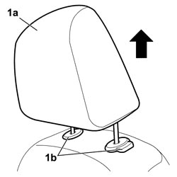
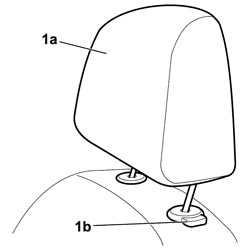

7045B12 FRONT SEAT HEAD RESTRAINT, LEFT OR RIGHT - R.R. WITH FRONT SEAT REMOVED
- Path
- Procedures > 70 FITTINGS > 7045 FRONT SEATS > 7045B FRONT SEAT HEAD RESTRAINT/ARMREST > 7045B12 FRONT SEAT HEAD RESTRAINT, LEFT OR RIGHT - R.R. WITH FRONT SEAT REMOVED
- Kind
- repair procedure (removal / refitting; the operation number is the code)
- Applies to
- all engines; all production periods
- Interactive page
- https://sloeber94.github.io/elrnDB-fCrm/en/#/194001110
Applies to: all engines; all production periods
 Removing
Removing
 Refitting
Refitting1. Raise the head restraint (1a) until it is in the end of travel position, press the buttons (1b) and remove it from the seat.

Applies to: all engines; all production periods
Refitting
Removing1. Fit the head restraint (1a) and push it until it locks, then adjust the height using the button (1b).

Topics that link to this page (7)
- 5580C44 FRONT SIDE BAG MODULE (ONE) LH OR RH - R.R
- 7045A39 DEVICE FOR DRIVER'S SEAT BACKREST LUMBAR ADJUSTMENT - R.R.
- 7045D10 TRIM FOR ONE FRONT SEAT LH OR RH - R.R
- 7045D11 TRIM OF ONE FRONT SEAT LH OR RH RR WITH SEAT REMOVED
- 7045D30 FRONT SEAT BACKREST COVER, LEFT OR RIGHT - R.R.
- 7045D31 FRONT SEAT BACKREST COVER, LEFT OR RIGHT - R.R. WITH SEAT REMOVED
- 7045M26 L/H OR R/H FRONT SEAT SQUAB HEAT PAD - R+R FOLLOWING ELECTRICAL WIRING CHECK